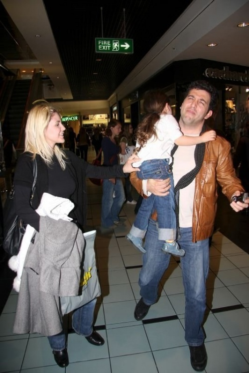

В 2004 году Эмре Кынай сыграл свадьбу с турецкой актрисой Эмине Юн. В 2005 году у супругов появилась дочь Дуру. В 2009 году Эмре Кынай и Эмине Юн объявили о своем разводе.
В 2016 году появились новости о том, что звезда сериала «Эй, Стамбул!» состоит в отношениях с турецкой актрисой Башак Гюмюлчинелиоглу.

Эмре Кынай старше Башак Гюмюлчинелиоглу на 22 года.
Что творится в личной жизни у артиста в настоящий момент, неизвестно. По поводу его романов ходят слухи, однако они не подтверждены. В частности, ему приписывали роман с турецкой актрисой Эврим Аласьей, его коллегой по сериалу «Дочери Гюнеш».